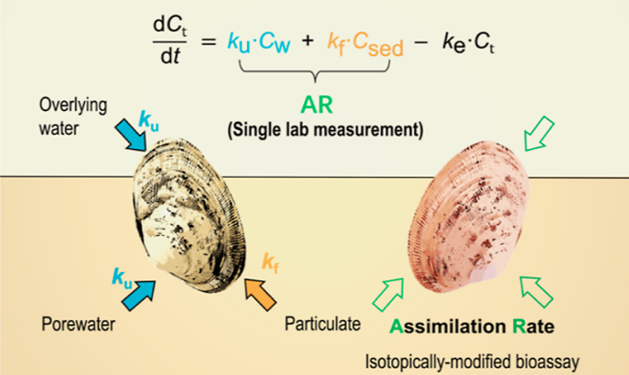
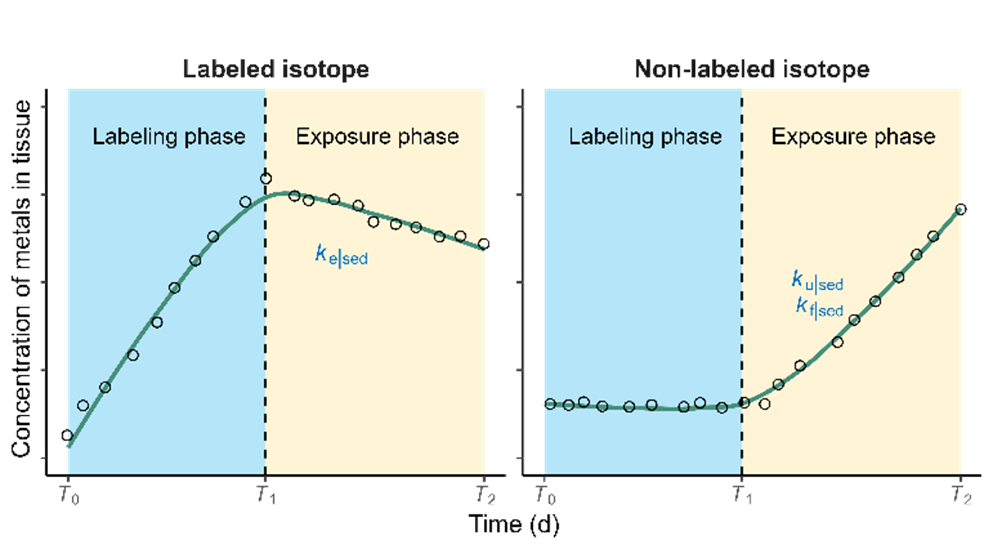
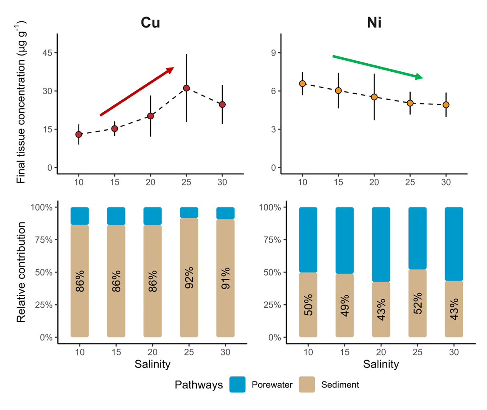
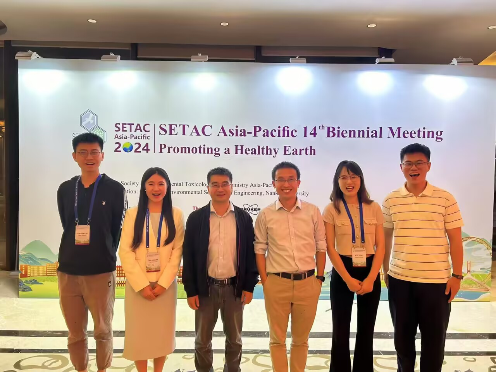
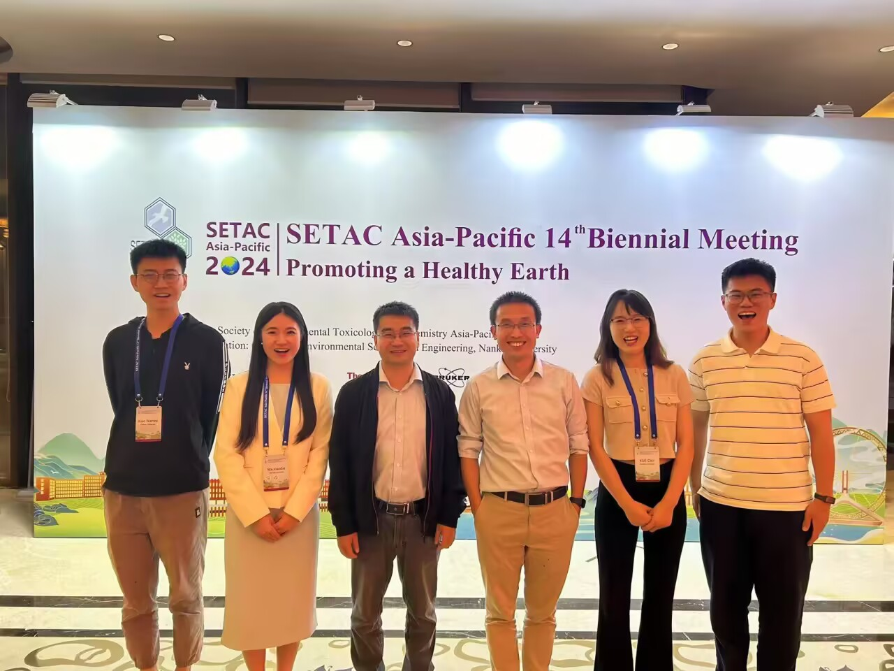

Research topic

The model describes that organisms continuously uptake metals from sediment particles
and aqueous solutions. Although the majority of metals are metabolized, the ongoing
uptake still leads to metal accumulation within the organism. Once the metal
concentration in the organism exceeds a threshold, toxicity risk arises,
resulting in organism mortality.
Publication

Enhancing sediment bioaccumulation predictions: isotopically
modified bioassay and biodynamic modeling for nickel assessment
Su, Q.; Xiao, W.; Simpson, S. L.; Tan, Q.-G.; Chen, R.; Xie, M
View Full Paper (PDF)

Through short-term exposure experiments combined with a TKTD model, acute-to-chronic
ratios can be predicted, enabling long-term protection of organisms. This
approach can also be applied to various pollutants.

The biodynamic model allows for the estimation of the no-effect concentration (NEC) and
the LC50 values at different exposure times.

The TKTD model can be used to calculate different toxicity endpoints and predict long-term
toxicity, thereby enabling the calculation of ACR. The model can be applied across multiple
species, various pollutants, and different environmental conditions.

The organisms are pre-exposed to a specific metal isotope. This metal isotope will
be clearly eliminated during the experiment, while the remaining metal isotopes will
accumulate, allowing the distinction between uptake and elimination processes.

The model predicted metal bioaccumulation under different salinity conditions and also
distinguished the sources of metal uptake by the organisms, whether from sediment
particles or from the water.


 
